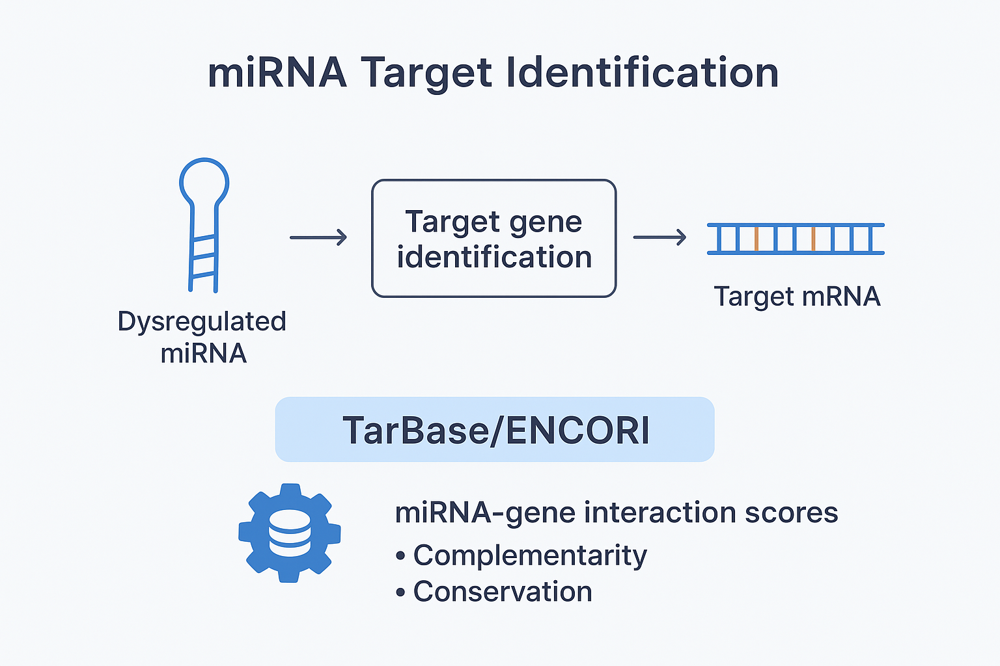
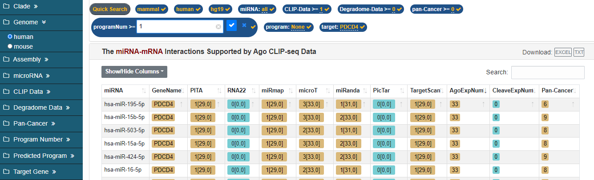
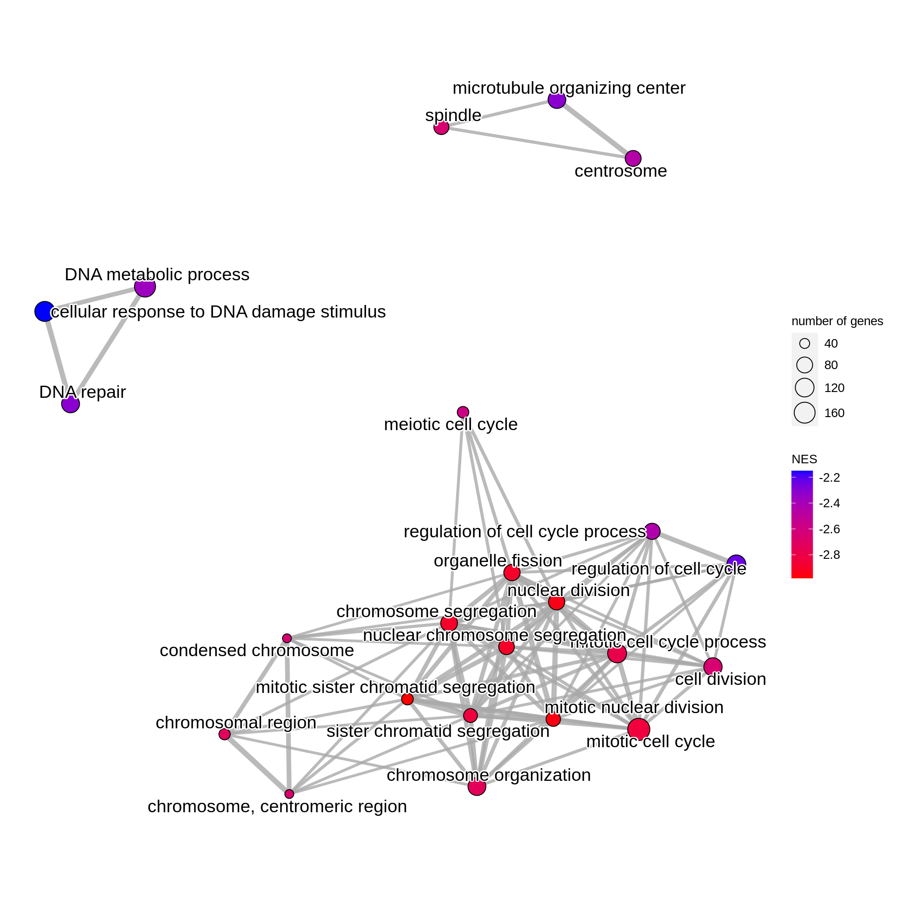
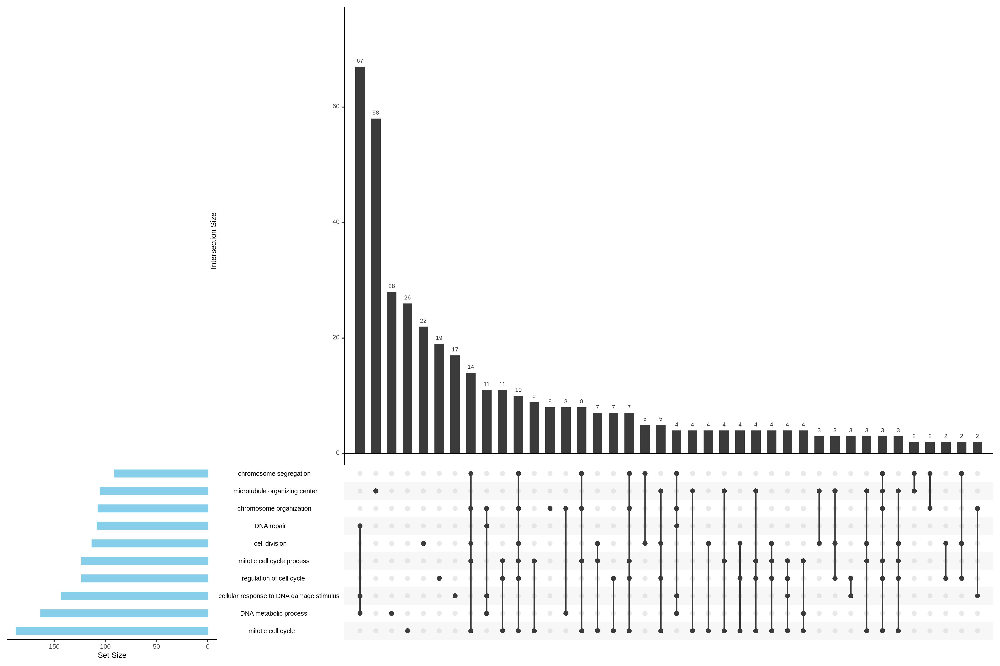
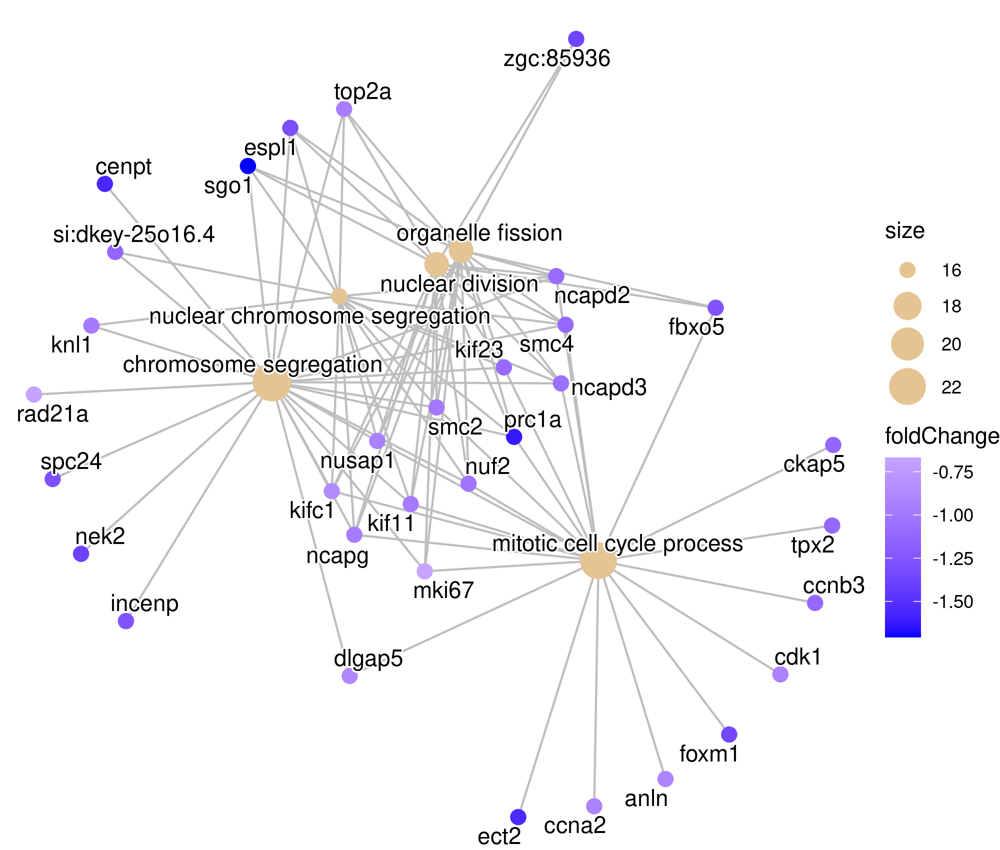

miRNA Target Identification
After identifying differentially expressed miRNAs, the next step is to determine their putative
target genes. Databases such as TarBase/ENCORI provide curated miRNA–mRNA
interactions and assign confidence scores based on:
- The number of complementary nucleotides between the miRNA and the target mRNA.
- Evolutionary conservation of the binding site across species.
- Hybridization energy of the miRNA–mRNA duplex.
- Available experimental evidence (CLIP-seq, degradome data, validated interactions).
This step helps prioritize high-confidence targets before performing functional enrichment,
ensuring that downstream analyses reflect biologically meaningful miRNA-mediated regulation.


GSEA: Gene Set Enrichment Analysis
GSEA evaluates whether a predefined set of genes shows significant, coordinated differences
between two biological conditions. In this study, gene sets from
GO Biological Process and KEGG Pathways were used, implemented
via the clusterProfiler and enrichplot R packages.
The main metrics reported by GSEA include:
- Enrichment Score (ES): reflects overrepresentation across the ranked list.
- Normalized Enrichment Score (NES): adjusts ES for gene set size.
- p-value / FDR: estimates the statistical significance of enrichment.
a) Dotplot
The dotplot summarizes enriched terms using the Gene Ratio, NES,
and statistical significance. A NES > 0 indicates pathway activation, while
NES < 0 indicates suppression.
b) Gene–concept network
This network visualization links genes to their enriched pathways. Node size represents gene set
size, while node color may reflect log2 fold-changes, helping identify central
regulators shared across multiple terms.
c) Enrichment map
The enrichment map clusters related terms based on gene overlap. Node size represents the number
of contributing genes, while color indicates the enrichment direction.

d) Ridgeplot
Ridgeplots display the distribution of fold changes for genes within each
enriched pathway, providing a detailed look at regulatory patterns inside individual gene sets.
e) UpSet plot
The UpSet plot visualizes intersections between gene sets, highlighting shared genes,
co-regulated pathways, and unique terms.

f) GSEA Plot (Enrichment Curve)
The classical GSEA enrichment curve shows the running enrichment score as the algorithm walks
down the ranked gene list. Peaks represent maximal enrichment, while vertical bars indicate the
positions of individual genes from the set.
ORA: Over-representation Analysis
ORA evaluates whether specific GO terms are statistically overrepresented in a list of selected
genes. Here, genes with adjusted p-value < 0.05 were used (no fold-change
cutoff), and results were visualized using the enrichplot package.
Dotplot
Shows the most significantly enriched GO terms, ranked by gene ratio and adjusted p-values,
providing an intuitive summary of enrichment strength and significance.
Barplot
Barplots display gene counts or ratios for each enriched GO term, offering a clear and accessible
visualization of the most prominent categories.
Enrichment Map
Similar to the GSEA version, this map clusters enriched GO terms based on semantic similarity,
helping identify shared biological functions or coordinated processes.
Gene–concept network
This network links enriched GO terms with their contributing genes. It helps identify central,
multi-functional genes involved in several biological pathways.
